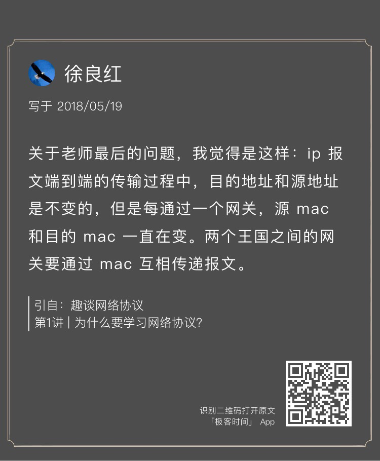
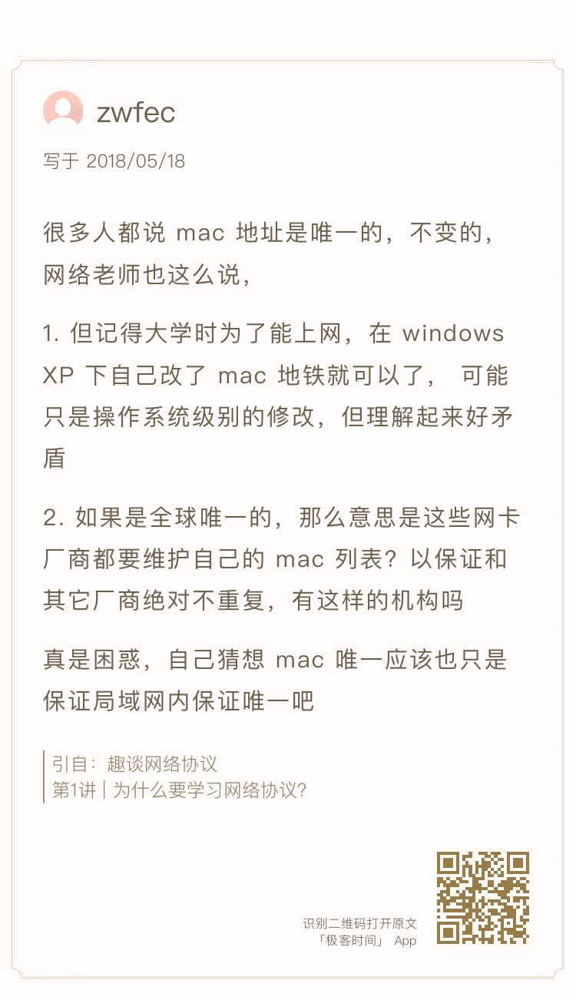
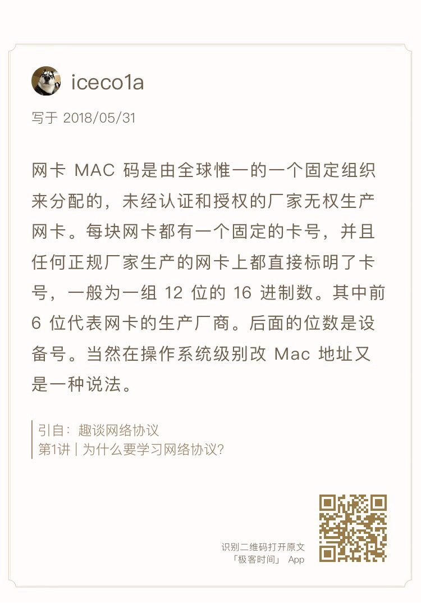
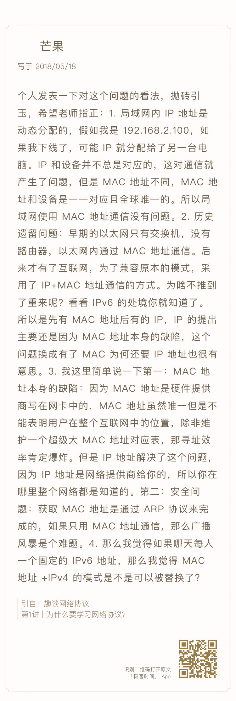
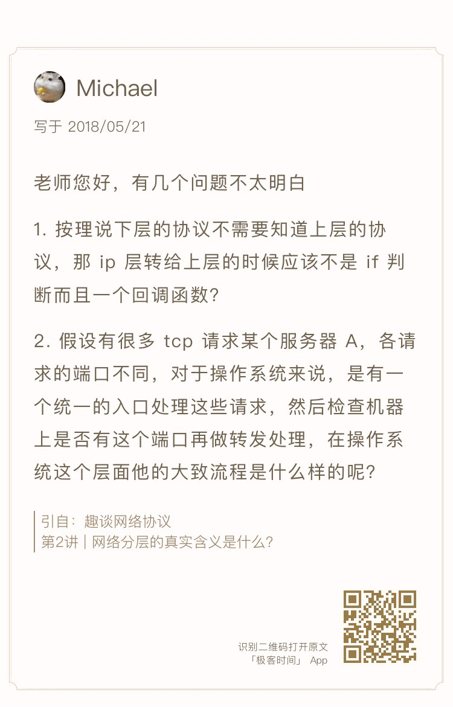
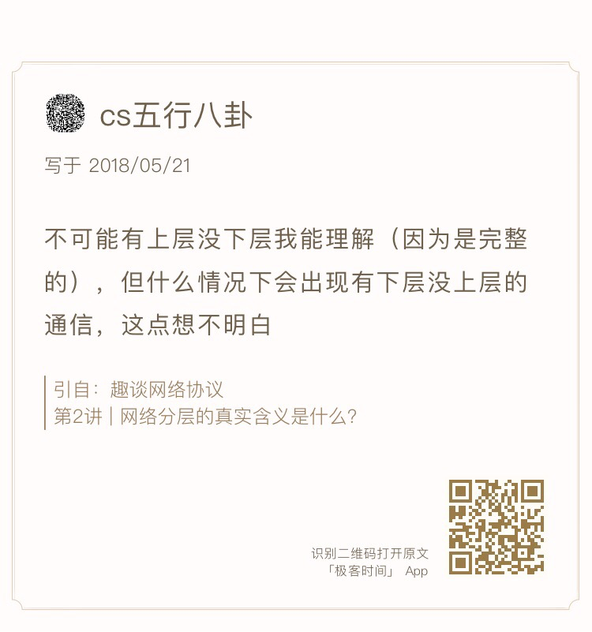
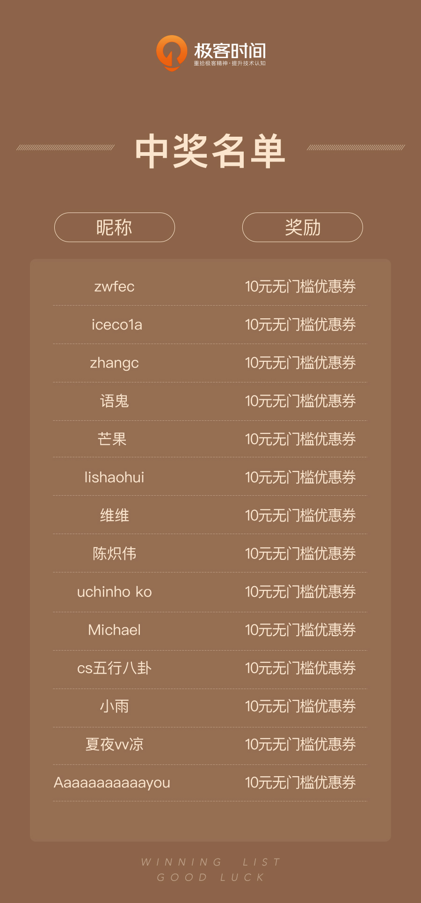

- 00 开篇词 想成为技术牛人？先搞定网络协议！.md.html
- 01 为什么要学习网络协议？.md.html
- 02 网络分层的真实含义是什么？.md.html
- 03 ifconfig：最熟悉又陌生的命令行.md.html
- 04 DHCP与PXE：IP是怎么来的，又是怎么没的？.md.html
- 05 从物理层到MAC层：如何在宿舍里自己组网玩联机游戏？.md.html
- 06 交换机与VLAN：办公室太复杂，我要回学校.md.html
- 07 ICMP与ping：投石问路的侦察兵.md.html
- 08 世界这么大，我想出网关：欧洲十国游与玄奘西行.md.html
- 09 路由协议：西出网关无故人，敢问路在何方.md.html
- 10 UDP协议：因性善而简单，难免碰到“城会玩”.md.html
- 11 TCP协议（上）：因性恶而复杂，先恶后善反轻松.md.html
- 12 TCP协议（下）：西行必定多妖孽，恒心智慧消磨难.md.html
- 13 套接字Socket：Talk is cheap, show me the code.md.html
- 14 HTTP协议：看个新闻原来这么麻烦.md.html
- 15 HTTPS协议：点外卖的过程原来这么复杂.md.html
- 16 流媒体协议：如何在直播里看到美女帅哥？.md.html
- 17 P2P协议：我下小电影，99%急死你.md.html
- 18 DNS协议：网络世界的地址簿.md.html
- 19 HttpDNS：网络世界的地址簿也会指错路.md.html
- 20 CDN：你去小卖部取过快递么？.md.html
- 21 数据中心：我是开发商，自己拿地盖别墅.md.html
- 22 VPN：朝中有人好做官.md.html
- 23 移动网络：去巴塞罗那，手机也上不了脸书.md.html
- 24 云中网络：自己拿地成本高，购买公寓更灵活.md.html
- 25 软件定义网络：共享基础设施的小区物业管理办法.md.html
- 26 云中的网络安全：虽然不是土豪，也需要基本安全和保障.md.html
- 27 云中的网络QoS：邻居疯狂下电影，我该怎么办？.md.html
- 28 云中网络的隔离GRE、VXLAN：虽然住一个小区，也要保护隐私.md.html
- 29 容器网络：来去自由的日子，不买公寓去合租.md.html
- 30 容器网络之Flannel：每人一亩三分地.md.html
- 31 容器网络之Calico：为高效说出善意的谎言.md.html
- 32 RPC协议综述：远在天边，近在眼前.md.html
- 33 基于XML的SOAP协议：不要说NBA，请说美国职业篮球联赛.md.html
- 34 基于JSON的RESTful接口协议：我不关心过程，请给我结果.md.html
- 35 二进制类RPC协议：还是叫NBA吧，总说全称多费劲.md.html
- 36 跨语言类RPC协议：交流之前，双方先来个专业术语表.md.html
- 37 知识串：用双十一的故事串起碎片的网络协议（上）.md.html
- 38 知识串：用双十一的故事串起碎片的网络协议（中）.md.html
- 39 知识串：用双十一的故事串起碎片的网络协议（下）.md.html
- 40 搭建一个网络实验环境：授人以鱼不如授人以渔.md.html
- 加餐1 创作故事：我是如何创作“趣谈网络协议”专栏的？.md.html
- 协议专栏特别福利 答疑解惑1期.md.html
- 协议专栏特别福利 答疑解惑2期.md.html
- 协议专栏特别福利 答疑解惑3期.md.html
- 协议专栏特别福利 答疑解惑4期.md.html
- 协议专栏特别福利 答疑解惑5期.md.html
- 结束语 放弃完美主义，执行力就是限时限量认真完成.md.html
- 捐赠
协议专栏特别福利 答疑解惑1期
你好，我是刘超。
首先，感谢大家关注并在留言区写下近3000条留言。留言太多，没有及时回复，一是每周写三篇文章压力真的挺大的。为了保质保量地产出，晚上和周末的时间基本上都搭进去了。二是很多人的留言非常有深度，水平很高，提的问题一两句话解释不清楚。
每一节结尾我基本都会留两个思考题，其中第一个问题是启发思考的，是对本节内容的延伸学习；第二个问题是为了引出下一节，下一节的内容其实就是答案。
所以我会回答一下每一节的第一个问题，并列出第一个同我的思路最相近的同学，并对留言中比较有代表性的问题，做一个统一的回答，顺便也实现之前要送知识图谱和奖励礼券的承诺。
当然，这并不能说明我的回答就是一定是正确的或者全面的，有很多同学的留言有非常大的信息量，甚至更广的思路，也对这些同学表示感谢。还有些同学指出了我的错误，也感谢你们。
《第1讲 | 为什么要学习网络协议？》
课后思考题
当网络包到达一个城关的时候，可以通过路由表得到下一个城关的 IP 地址，直接通过 IP地址找就可以了，为什么还要通过本地的MAC地址呢？

徐良红同学说的比较接近。在网络包里，有源IP地址和目标IP地址、源MAC地址和目标MAC地址。从路由表中取得下一跳的IP地址后，应该把这个地址放在哪里呢？如果放在目标IP地址里面，到了城关，谁知道最终的目标在哪里呢？所以要用MAC地址。
所谓的下一跳，看起来是IP地址，其实是要通过ARP得到MAC地址，将下一跳的MAC地址放在目标MAC地址里面。
留言问题
1.MAC地址可以修改吗？


我查了一下，MAC（Media Access Control，介质访问控制）地址，也叫硬件地址，长度是48比特（6字节），由16进制的数字组成，分为前24位和后24位。
前24位叫作组织唯一标志符（Organizationally Unique Identifier，OUI），是由IEEE的注册管理机构给不同厂家分配的代码，用于区分不同的厂家。后24位是厂家自己分配的，称为扩展标识符。同一个厂家生产的网卡中MAC地址后24位是不同的。
也就是说，MAC本来设计为唯一性的，但是后来设备越来越多，而且还有虚拟化的设备和网卡，有很多工具可以修改，就很难保证不冲突了。但是至少应该保持一个局域网内是唯一的。
MAC的设计，使得即便不能保证绝对唯一，但是能保证一个局域网内出现冲突的概率很小。这样，一台机器启动的时候，就能够在没有IP地址的情况下，先用MAC地址进行通信，获得IP地址。
好在MAC地址是工作在一个局域网中的，因而即便出现了冲突，网络工程师也能够在自己的范围内很快定位并解决这个问题。这就像我们生成UUID或者哈希值，大部分情况下是不会冲突的，但是如果碰巧出现冲突了，采取一定的机制解决冲突就好。
2.TCP重试有没有可能导致重复下单？
答案是不会的。这个在[TCP]那一节有详细的讲解。因为TCP层收到了重复包之后，TCP层自己会进行去重，发给应用层、HTTP层。还是一个唯一的下单请求，所以不会重复下单。
那什么时候会导致重复下单呢？因为网络原因或者服务端错误，导致TCP连接断了，这样会重新发送应用层的请求，也即HTTP的请求会重新发送一遍。
如果服务端设计的是无状态的，它记不住上一次已经发送了一次请求。如果处理不好，就会导致重复下单，这就需要服务端除了实现无状态，还需要根据传过来的订单号实现幂等，同一个订单只处理一次。
还会有的现象是请求被黑客拦截，发送多次，这在HTTPS层可以有很多种机制，例如通过 Timestamp和Nonce随机数联合起来，然后做一个不可逆的签名来保证。
3.TCP报平安的包是原路返回吗？
谢谢语鬼同学的指正。这里的比喻不够严谨，容易让读者产生误会，这里的原路返回的意思是原样返回，也就是返回也是这个过程，不一定是完全一样的路径。
4.IP地址和MAC地址的关系？

芒果同学的理解非常准确，讲[IP和MAC的关系]的时候说了这个问题。IP是有远程定位功能的，MAC是没有远程定位功能的，只能通过本地ARP的方式找到。
我个人认为，即便有了IPv6，也不会改变当前的网络分层模式，还是IP层解决远程定位问题，只不过改成IPv6了，到了本地，还是通过MAC。
5.如果最后一跳的时候，IP改变了怎么办？
对于IP层来讲，当包到达最后一跳的时候，原来的IP不存在了。比如网线拔掉了，或者服务器直接宕机了，则ARP就找不到了，所以这个包就会发送失败了。对于IP层的工作就结束了。
但是IP层之上还有TCP层，TCP会重试的，包还是会重新发送，但是如果服务器没有启动起来，超过一定的次数，最终放弃。
如果服务器重启了，IP还是原来的IP地址，这个时候TCP重新发送的一个包的时候，ARP是能够得到这个地址的，因而会发到这台机器上来，但是机器上面没有启动服务端监听那个端口，于是会发送ICMP端口不可达。
如果服务器重启了，服务端也重新启动了，也在监听那个端口了，这个时候TCP的服务端由于是新的，Sequence Number根本对不上，说明不是原来的连接，会发送RST。
那有没有可能有特殊的场景Sequence Number也能对的上呢？按照Sequence Number的生成算法，是不可能的。
但是有一个非常特殊的方式，就是虚拟机的热迁移，从一台物理机迁移到另外一台物理机，IP不变，MAC不变，内存也拷贝过去，Sequence Number在内存里面也保持住了，在迁移的过程中会丢失一两个包，但是从TCP来看，最终还是能够连接成功的。
6.TCP层报平安，怎么确认浏览器收到呢？
TCP报平安，只能保证TCP层能够收到，不保证浏览器能够收到。但是可以想象，如果浏览器是你写的一个程序，你也是通过socket编程写的，你是通过socket，建立一个TCP的连接，然后从这个连接里面读取数据，读取的数据就是TCP层确认收到的。
这个读取的动作是本地系统调用，大部分情况下不会失败的。如果读取失败呢，当然本地会报错，你的socket读取函数会返回错误，如果你是浏览器程序的实现者，你有两种选择，一个是将错误报告给用户，另一个是重新发送一次请求，获取结果显示给用户。
7.ARP协议属于哪一层？

ARP属于哪个层，一直是有争议的。比如《TCP/IP详解》把它放在了二层和三层之间，但是既然是协议，只要大家都遵守相同的格式、流程就可以了，在实际应用的时候，不会有歧义的，唯一有歧义的是参加各种考试，让你做选择题，ARP属于哪一层？平时工作中咱不用纠结这个。
《第2讲 | 网络分层的真实含义是什么？》
课后思考题
如果你也觉得总经理和员工的比喻不恰当，你有更恰当的比喻吗？
我觉得，寄快递和寄信这两个比喻都挺好的。关键是有了封装和解封装的过程。有的同学举了爬楼，或者公司各层之间的沟通，都无法体现封装和解封装的过程。
留言问题
1.为什么要分层？
是的，仅仅用复杂性来解释分层，太过牵强了。
其实这是一个架构设计的通用问题，不仅仅是网络协议的问题。一旦涉及到复杂的逻辑，或者软件需求需要经常变动，一般都会通过分层来解决问题。
假如我们将所有的代码都写在一起，但是产品经理突然想调整一下界面，这背后的业务逻辑变不变，那要不要一起修改呢？所以会拆成两层，把UI层从业务逻辑中分离出来，调用API来进行组合。API不变，仅仅界面变，是不是就不影响后台的代码了？
为什么要把一些原子的API放在基础服务层呢？将数据库、缓存、搜索引擎等，屏蔽到基础服务层以下，基础服务层之上的组合逻辑层、API层都只能调用基础服务层的API，不能直接访问数据库。
比如我们要将Oracle切换成MySQL。MySQL有一个库，分库分表成为4个库。难道所有的代码都要修改吗？当然只要把基础服务层屏蔽，提供一致的接口就可以了。
网络协议也是这样的。有的想基于TCP，自己不操心就能够保证到达；有的想自己实现可靠通信，不基于TCP，而使用UDP。一旦分了层就好办了，定制化后要依赖于下一层的接口，只要实现自己的逻辑就可以了。如果TCP的实现将所有的逻辑耦合在了整个七层，不用TCP的可靠传输机制都没有办法。
2.层级之间真实的调用方式是什么样的？

如果文中是一个逻辑图，这个问题其实已经到实现层面上来了，需要看TCP/IP的协议栈代码了。这里首先推荐一本书《深入理解Linux网络技术内幕》。
其实下层的协议知道上层协议的，因为在每一层的包头里面，都会有上一层是哪个协议的标识，所以不是一个回调函数，每一层的处理函数都会在操作系统启动的时候，注册到内核的一个数据结构里面，但是到某一层的时候，是通过判断到底是哪一层的哪一个协议，然后去找相应的处理函数去调用。
调用的大致过程我这里再讲一下。由于TCP比较复杂，我们以UDP为例子，其实发送的包就是一个sk_buff结构。这个在[Socket]那一节讲过。
int udp_send_skb(struct sk_buff *skb, struct flowi4 *fl4)
接着，UDP层会调用IP层的函数。
int ip_send_skb(struct net *net, struct sk_buff *skb)
然后，IP层通过路由判断，最终将包发给下一层。
int ip_output(struct net *net, struct sock *sk, struct sk_buff *skb)
发送的时候，要进行ARP。如果有MAC，则调用二层的函数，neigh其实就是邻居系统，是二层的意思。
int neigh_output(struct neighbour *n, struct sk_buff *skb)
接收的时候，会调用这里的接收函数。
int netif_receive_skb(struct sk_buff *skb)
这个函数会根据是ARP或者IP等，选择调用不同的函数。如果是IP协议的话，就调用这里的函数。
int ip_rcv(struct sk_buff *skb, struct net_device *dev, struct packet_type *pt, struct net_device *orig_dev)
这里也有路由判断。如果是本地的，则继续往上提交这个结构。
int ip_local_deliver(struct sk_buff *skb)
接着，还是根据IP头里面的协议号，来判断是什么协议，从而调用什么函数。下面这个是对UDP的调用。
int udp_rcv(struct sk_buff *skb)
3.什么情况下会有下层没上层？

有时候我们自己写应用的时候，不一定是直接调用应用层协议的接口，例如HTTP等，而是自己写Socket编程，来约定应用层的协议。再如，ping也是一个应用，但是它没有用传输层的协议，而是用了ICMP的协议。
最后，感谢留言次数前15名的同学，谢谢你们持之以恒的学习，相信你们一定有自己的收获。（统计数据截止到2018年8月8日）
同时感谢第1讲、第2讲中对内容有深度思考和提出问题的同学。我会为你们送上奖励礼券和知识图谱。（稍后运营同学会发送短信通知。）
欢迎你继续提问！

© 2019 - 2023 Liangliang Lee. Powered by gin and hexo-theme-book.